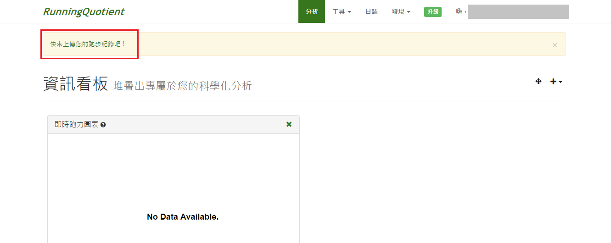
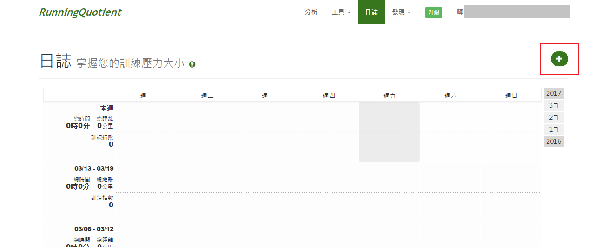
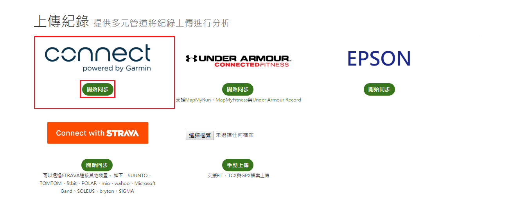
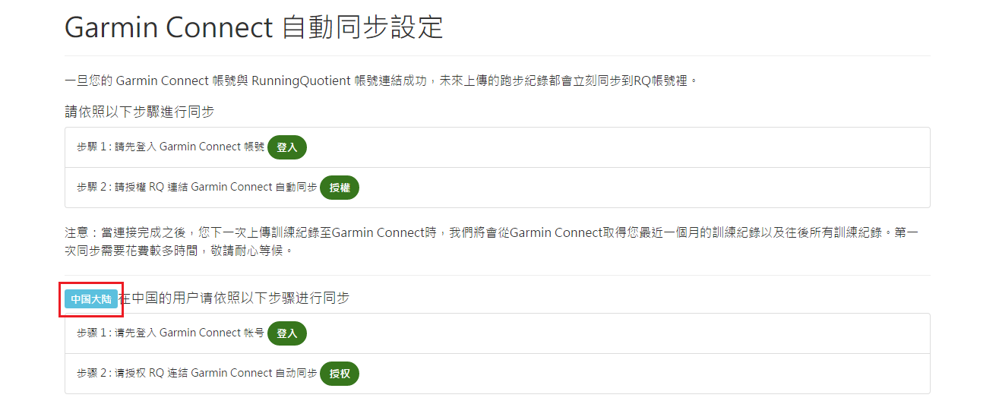
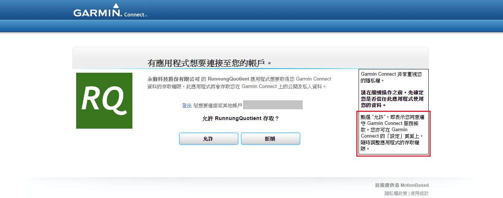
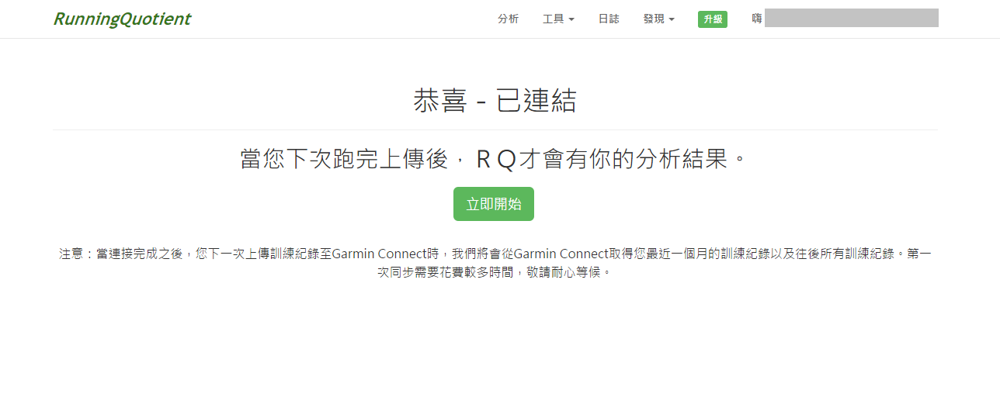

同步Garmin Connect
登入RQ後 請按照以下步驟完成資料上傳
-
步驟一 (尚未同步過) 請在分析頁面點選紅框框內的文字

步驟一 (已同步過) 請在日誌頁面點選紅框框內的+號

-
步驟二 請點選紅框框內Garmin Connect的開始同步按鈕

-
步驟三 1. 請先點選登入按鈕登入您的Garmin帳號，並同步您的裝置；
2. 完成後再回到此頁面點選授權按鈕；
3. 中國大陸的用戶請依照紅色框框下的步驟操作

-
步驟四 點選授權按鈕後，請點選允許按鈕

-
步驟五 恭喜您，已同步成功。待下次上傳數據後，即會顯示您的分析結果
